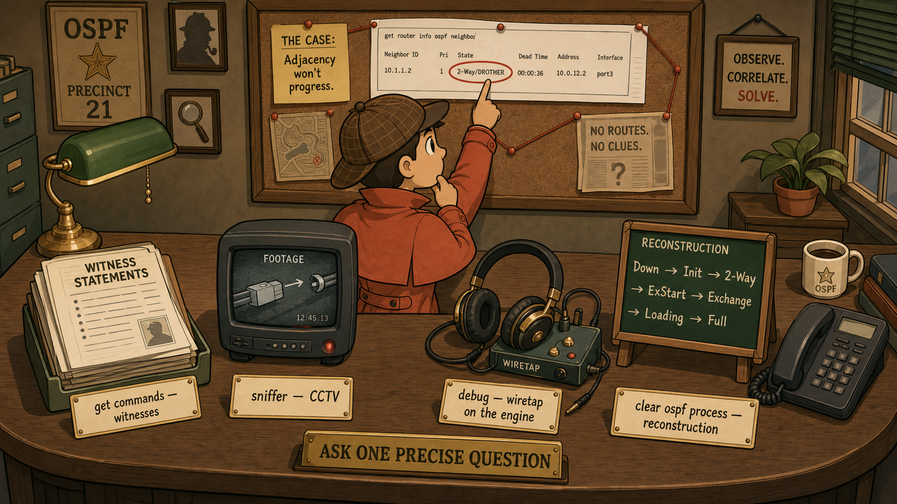

Why a kit, not a list
OSPF fails in layers: hellos can be rejected before a neighbor exists, adjacencies can park mid-handshake, the LSDB can be perfect while the routing table disagrees, and — worst of all — everything can be Full while traffic quietly takes the wrong path. Each layer has its own interrogation command. The problem this kit solves: engineers who run one command, see "something," and start changing config. The kit forces the opposite — locate the failing layer first, then look at exactly that layer.
The mental model is the FortiOS CLI taxonomy applied to OSPF: get reads clean operational state (what does OSPF believe right now?), diagnose reaches the raw engine and the wire (what is actually happening?), execute takes real action (make it happen again). Start at get; escalate to diagnose only when the summaries disagree with reality.
Which question are you asking?
| The question | The command | What to read in the output |
|---|---|---|
| Who are my neighbors, and how far did each relationship get? | get router info ospf neighbor | State column (and role suffix: DR / BDR / DROther) · Pri · Dead Time behavior (resetting = hellos arriving) |
| What is THIS interface's OSPF personality? | get router info ospf interface | Network Type · Priority · Cost · Hello/Dead/Wait timers · DR and BDR identity · Area · your own Router ID. The single richest output for adjacency faults. |
| What is this router's overall OSPF identity? | get router info ospf status | Router ID · number of areas attached · count of fully adjacent neighbors — the health-at-a-glance number |
| What does the map actually contain? | get router info ospf database brief | The whole LSDB ordered by LSA type — is the expected Type 1/2/3/5 even present? |
| What exactly did that router advertise about its links? | get router info ospf database router lsa | Type 1 detail — links, costs, flags (an ASBR's E-bit lives here) |
| Did OSPF's opinion make it into the routing table? | get router info routing-table ospf | Only OSPF-derived routes. Compare against get router info routing-table all — if the LSDB has it but the RIB doesn't, a better AD (Static 10, eBGP 20) is beating OSPF's 110 |
| Is fast failure detection actually negotiated? | get router info bfd neighbor | BFD status when BFD is enabled on OSPF routers |
| Are hellos physically on the wire? | diagnose sniffer packet <port> 'proto 89' 4 | OSPF is IP protocol 89, hellos to multicast 224.0.0.5 (DR/BDR listen on 224.0.0.6). Proves the wire when the summaries can't. |
| What is the OSPF engine thinking, live? | diagnose ip router ospf all enablediagnose ip router ospf level infodiagnose debug enable | Real-time engine events: hellos rejected and why, state transitions, elections. Finish with diagnose debug disable — always, no exceptions. |
| Make it happen again, from zero | execute router clear ospf process | Restarts OSPF — all adjacencies re-form while you watch with debug/sniffer running. An execute: real consequences, production caution. |
show is silent on defaults — a default hello timer or default priority is invisible to it. show full-configuration router ospf reveals every value, including the ones nobody typed.
Escalate downward through the layers
get router info ospf neighbor— does a neighbor entry exist, and at what state? This single output splits the entire fault tree.- No entry at all? → hello-acceptance problem.
get router info ospf interfaceon both sides; compare timers, area, subnet, auth line by line. - Entry parked at a state? → the state names the suspect: Init = one-way delivery · 2-Way = DR election / priority · ExStart-Exchange = MTU or duplicate RID. Interrogate with
get router info ospf interface. - Full, but routes missing? →
database brief(is it in the map?) thenrouting-table ospfvsrouting-table all(did AD competition eat it?). - Summaries contradict reality? → drop to the wire: sniffer
'proto 89', then OSPF debug. The engine will tell you exactly why it rejects a hello. - Need a clean re-run? →
execute router clear ospf processwith debug watching. Thendiagnose debug disable.
What the exam actually checks
- Protocol 89 — OSPF rides directly on IP (no TCP/UDP). Hellos to 224.0.0.5; DR/BDR listen on 224.0.0.6. Sniffer filter:
'proto 89'. - State suffix —
Full/DRmeans the neighbor is the DR, not you. Read the suffix as the neighbor's role. - Dead Time column — a countdown that keeps resetting is a healthy hello stream; one that marches to zero is packet loss in progress.
- LSDB ≠ RIB —
database briefshows what OSPF knows;routing-table ospfshows what survived AD competition (Static 10 · eBGP 20 · OSPF 110 · iBGP 200). - 2-Way is not always a fault — DROTHER↔DROTHER pairs park there by design. The exam shows a healthy multi-router segment and invites you to "fix" it.
- get vs diagnose vs execute — summary vs raw engine vs real action. The exam tests whether you know which family a task belongs to.
The five ways engineers fool themselves
- Blaming timers for a visible neighbor. If any neighbor entry exists, timers/area/subnet/auth already matched. Stop suspecting them.
- Reading only one side. Adjacency faults are comparisons;
ospf interfacefrom one router proves nothing about the mismatch. - Trusting
show. Defaults are invisible to it — the "missing" priority setting may be the whole story. - Declaring victory at Full. Full proves synchronization, not sensible paths — check Cost and the reference bandwidth before signing off.
- Leaving debug running.
diagnose debug disableis the last line of every debug session. No exceptions.
get commands are witness statements — clean, summarized, occasionally missing what nobody thought to mention. The sniffer is CCTV footage: unglamorous, but it never lies about what was on the wire. Debug is the wiretap on the suspect's own phone — the engine narrating its decisions in real time. And execute clear ospf process is the reconstruction: make the crime happen again while every camera is rolling. A good detective doesn't collect everything — they ask one precise question and pull exactly that evidence.
Five questions, cold
- A neighbor shows
2-Way/DROTHERfor ten minutes on a two-router link. Which single command's output contains the smoking gun, and which two lines do you read? - No neighbor entry exists at all. Name the four hello-packet mismatches this instantly puts on the suspect list — and the one famous suspect it instantly removes from every OTHER stuck state.
- The LSDB contains a prefix but the routing table doesn't. Which two commands prove it, and what concept explains the gap?
- You need to see raw hellos on the wire. Exact sniffer filter, and the multicast address hellos are sent to?
- What is the mandatory final command of any OSPF debug session, and which CLI family does restarting the OSPF process belong to — and why does that family demand caution?